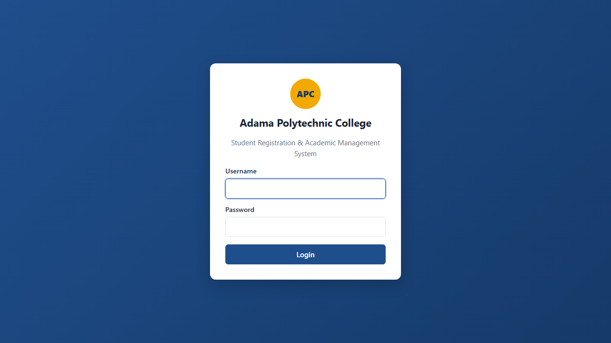
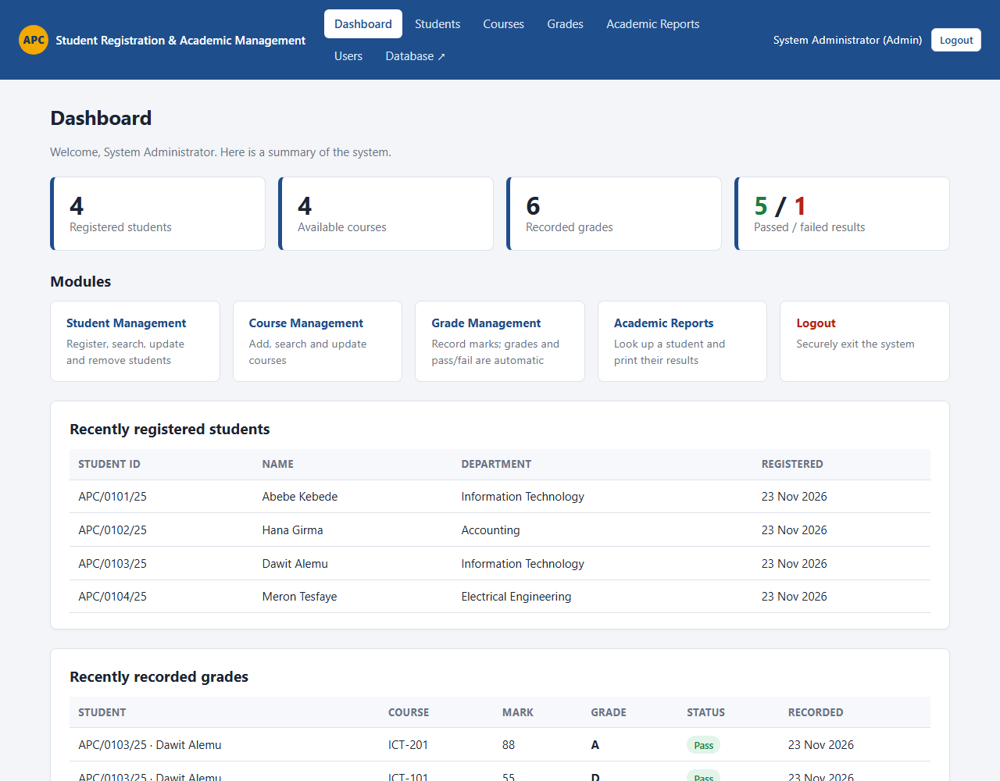
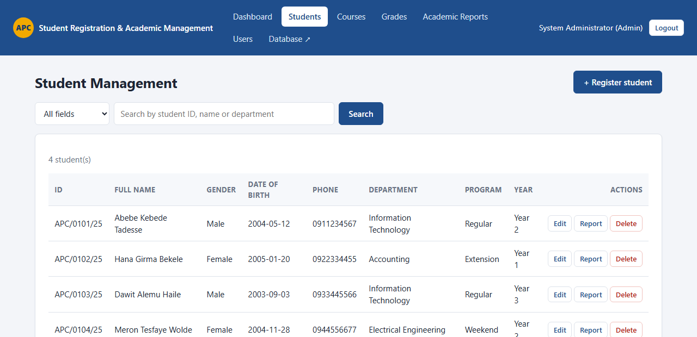
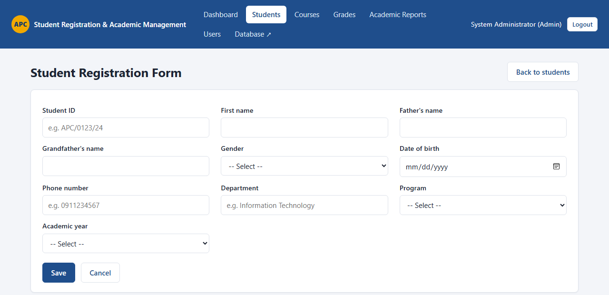
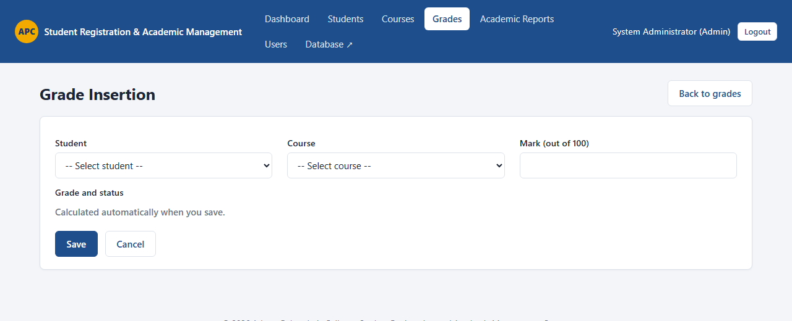
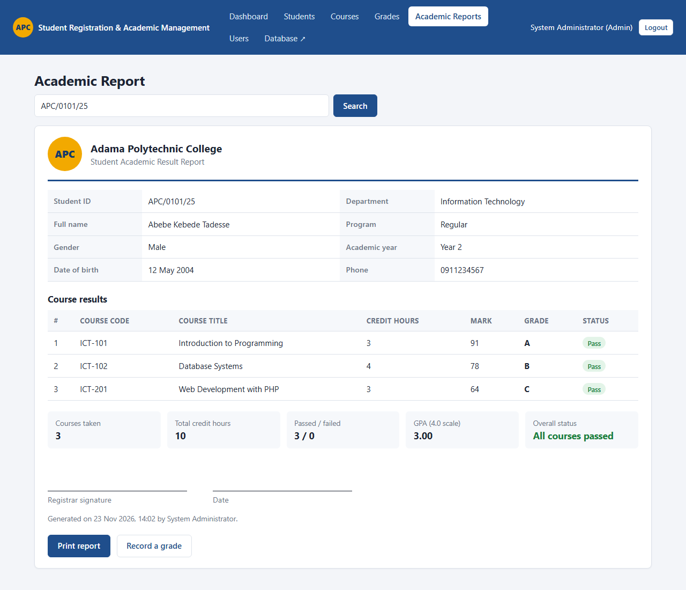
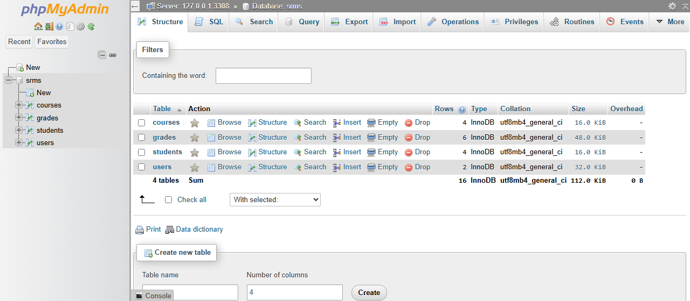
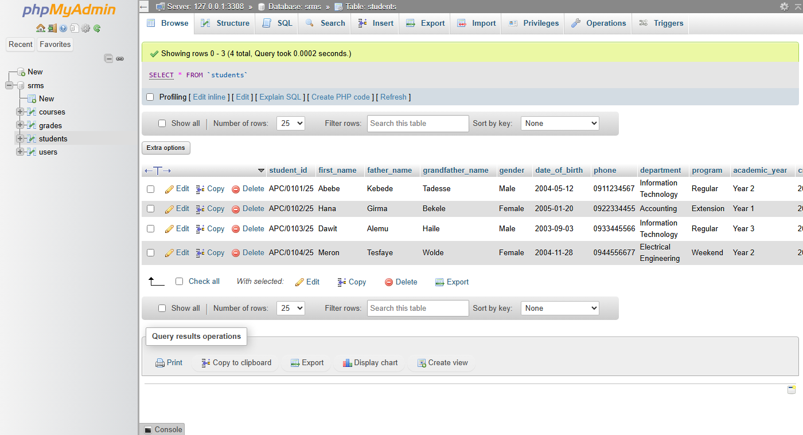

This program keeps the college's student records, courses, grades and result reports in one place. It runs straight from its folder or a USB stick. Nothing needs to be installed.

A wrong password shows a red message asking you to try again. To change your password, click your name at the top right.
After logging in you see the dashboard. It shows the totals and the most recent activity.

| Menu | What it is for |
|---|---|
| Dashboard | Totals: students, courses, grades, passed and failed |
| Students | Register, find, change or remove students |
| Courses | Add, find, change or remove courses |
| Grades | Enter and change students' marks |
| Academic Reports | See and print one student's results |
| Users | Add or remove staff accounts (administrators only) |
| Database ↗ | Look at the raw database tables (administrators only, see section 6) |
| Logout | Leave the system safely |
| Task | Steps |
|---|---|
| Register a new student | Students → + Register student → fill in the form → Save |
| Find a student | Students → choose Student ID, Student name or Department → type → Search |
| Change a student's details | Students → Edit next to the student → change → Update |
| Add a course | Courses → + Add course → code, title, credit hours → Save |
| Enter a mark | Grades → + Record grade → choose student and course → type the mark (0–100) → Save |
| Add a staff member | Users → fill in Add a user → choose Registrar or Administrator → Save |


You only type the mark. The system gives the letter grade and Pass or Fail:
| Mark | 85–100 | 70–84 | 60–69 | 50–59 | below 50 |
|---|---|---|---|---|---|
| Grade | A | B | C | D | F |
| Result | Pass | Pass | Pass | Pass | Fail |


All the information is stored in a MySQL database called srms. You can look at the stored records exactly as the database keeps them, using phpMyAdmin, which is included.


| Table | What it holds |
|---|---|
| students | One row per student: ID, names, gender, date of birth, phone, department, program, year |
| courses | One row per course: code, title, credit hours |
| grades | One row per result: student ID, course code, mark, grade, Pass/Fail |
| users | Staff accounts. Passwords appear as a long scrambled code (for example $2y$10$...), because they are stored encrypted for safety. |
On a computer with XAMPP installed, the same database can be seen at http://localhost/phpmyadmin.
If the black window was closed by mistake, double-click Stop.bat.
| Problem | What to do |
|---|---|
| The page does not open | Type the address shown in the black window, for example http://127.0.0.1:8080/ |
| The black window shows "ERROR" | Make sure the folder is not read-only and the disk is not full, then start again. |
| Forgot the password | Ask an administrator to create a new account for you on the Users page. |
| No Database link in the menu | You are logged in as a registrar. Log in as an administrator. |